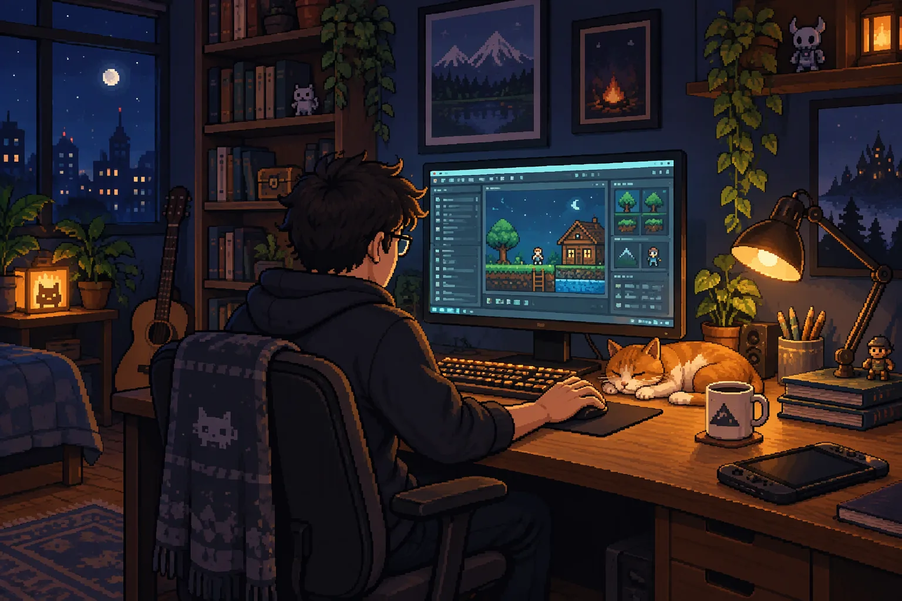

02 / THE STUDIO
About Rikerat
A small studio with an appetite for unusual ideas.

RIKERAT / INDEPENDENT STUDIOHELLO, WE'RE RIKERAT
Small team.
Big imagination.
Rikerat is an independent game studio based in Vietnam, founded and run by a solo game developer.
Our work is driven by experimentation: mixing familiar genres in unexpected ways, building satisfying systems, and creating little worlds with their own personalities.
From the arcade-inspired intensity of Tenvader to the gentle progression of A Cat’s Little Pond, each project is an opportunity to try something new.
See what we're makingWHAT WE BELIEVE
01
Curiosity first.
We love exploring mechanics, genres and new ways to play.
02
Small, meaningful details.
Little moments can make a world feel alive.
03
Independent spirit.
Freedom to experiment, learn and create on our own terms.